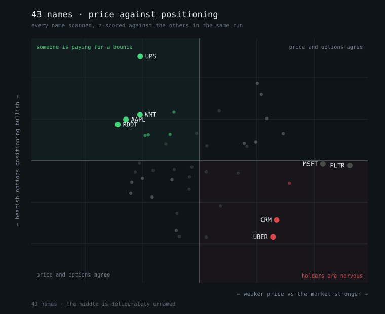

Talk is cheap. Options cost money. This ranks the stocks where those two stop agreeing — and puts the biggest disagreement at the top of one list you can read before coffee.
A price chart is the layer everybody already has. The information is in how far it has drifted from the other two.
What already happened. It is a fact, it is free, and by the time a chart looks obvious it is in the price.
What somebody paid to be right about. A trader who is long a stock and quietly buying puts against it is telling you something they would not post. That signal cost the person sending it money.
What people say will happen — free to produce, which is the whole problem with it. It counts at half weight, never more, so a loud enough crowd cannot outvote the people actually paying.
Every layer is z-scored against the names scanned in the same run, not against an absolute scale. A raw skew of 0.04 is neither high nor low; it is high or low for that name, today, against everything else you could be looking at instead. A utility and a biotech do not share a scale, and neither does a sleepy Tuesday and the morning after a CPI print.
The names describe what a person is doing, rather than what the greeks say.
Two of these are agreement and two are disagreement, and only the disagreements are the point. That is why the map below shades two quadrants and leaves the other two plain: a name whose price and options point the same way is the normal case, and giving it equal visual weight would be giving equal weight to the boring half of the market.
A ranked list says what to look at. It cannot say whether today is unusual — five names above a divergence of 2 is either a market coming apart or an ordinary Tuesday, and the top of a table looks identical either way.

tradesights chart — a standalone SVG, no plotting library and
nothing to install.$ tradesights scan scanned 43 names, 43 with usable option chains 1. UPS down 9% vs the market, but call buyers are stepping in — someone is paying for a bounce · options market split — protection is being paid for while calls trade divergence 3.55 2. UBER up 14% vs the market, but protection is being bought — holders are nervous divergence 3.12 3. CRM up 15% vs the market, but protection is being bought — holders are nervous divergence 2.77 This is a screener. Every name above is a question, not a call.
A tool that tells you its own failure modes is more trustworthy than one that does not.
yfinance, which breaks without warning and has no
support contract. A missing chain is reported as missing rather than guessed
around, so a morning where Yahoo is unhappy is a morning with a shorter
list.There is no order execution in this repo and no path from it to a broker, deliberately and permanently. It reads and it reports. It is also not backtested and carries no performance claims — somebody else's six months of trades is not evidence a method works, and there is no number here chosen to make the idea sound better than it is.
$ git clone https://github.com/Clanker-Labs/tradesights && cd tradesights $ uv sync $ tradesights scan # which names disagree with themselves $ tradesights rotation # where money is moving, by sector $ tradesights name NVDA # everything known about one name $ tradesights chart # the whole universe, as an SVG
It also ships an MCP server, so an agent can run the scan and post the digest to a chat without a person opening anything.